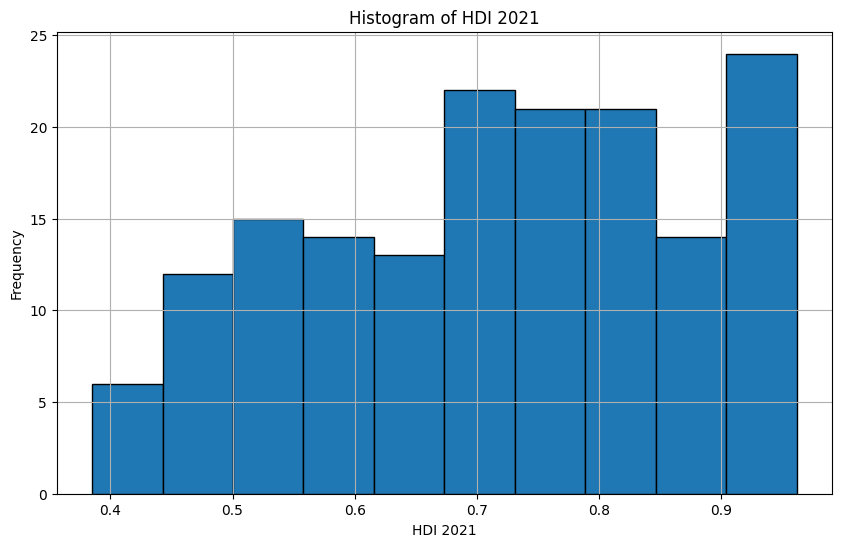
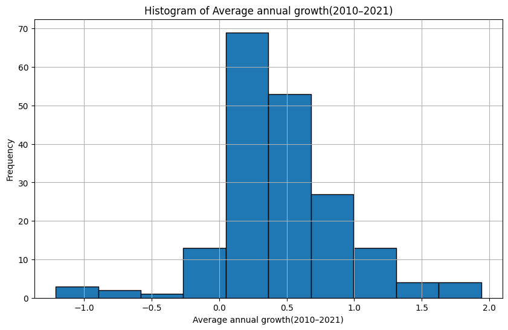
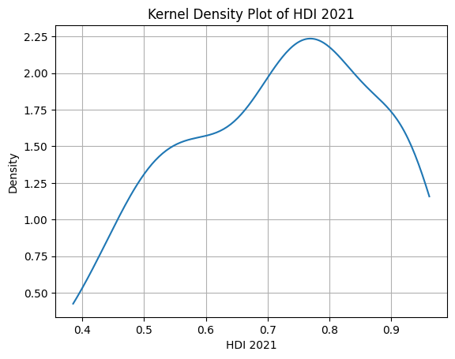
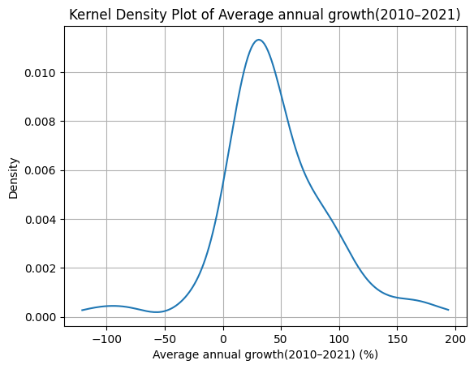

Dataset: HDI 2021 (Índice de Desarrollo Humano) por país.
Variables: HDI 2021, Crecimiento anual promedio (2010–2021).
📓 Descargar notebook .ipynb1 — Carga de datos
Se carga un archivo Excel con las columnas Nation, HDI 2021 y Average annual growth (2010–2021). Se eliminan valores nulos y se multiplica el crecimiento por 100 para expresarlo en porcentaje. Se incluye un visor interactivo por fragmentos con ipywidgets.
2 — Histogramas
HDI 2021: Distribución de frecuencias del índice de desarrollo humano (10 bins).

Crecimiento anual promedio: Distribución de frecuencias del crecimiento porcentual (10 bins).

↑ Volver al índice3 — Gráficos de densidad (KDE)
Estimación de densidad kernel (gaussian_kde) para ambas variables con 200 puntos de evaluación.


↑ Volver al índice4 — Estadísticos descriptivos
| Estadístico | HDI 2021 | Crecimiento anual |
|---|---|---|
| Media | 0.716 | 0.446% |
| Mediana | 0.731 | 0.390% |
| Desv. estándar | 0.156 | 0.459 |
| Coef. variación | 0.218 | 1.027 |
| RIC | 0.249 | 0.500 |
| Mínimo | 0.385 | -1.21% |
| Máximo | 0.962 | 1.94% |
5 — Conclusiones
HDI 2021: Media ≈ Mediana → distribución simétrica. Baja desviación estándar (0.156) y CV (0.218) indican poca variabilidad entre países. Rango de 0.577 muestra gran diferencia entre extremos.
Crecimiento anual: Media (0.446) ligeramente superior a mediana (0.39) → asimetría positiva por países de alto crecimiento. Alta desviación estándar (0.459) y CV (1.027) indican variabilidad significativa. Rango de 3.15 confirma grandes diferencias entre países.
↑ Volver al índice